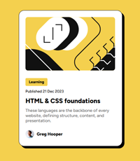
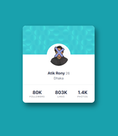
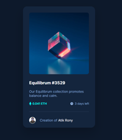
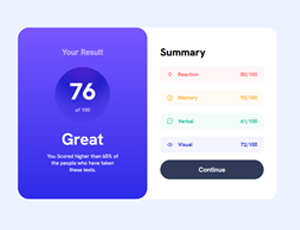
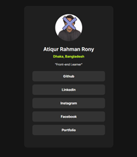

Hi, I’m Md. Atiqur Rahman Rony, a Software Quality Assurance Engineer from Dhaka, Bangladesh. I enjoy testing and breaking things (so they work perfectly when it matters!)—from web and mobile apps to APIs. I’ve worked on projects like EBL Skybanking app, Dream School, Testiphy, and TopperOn, collaborating closely with developers to make products smoother and more reliable. When I’m not diving into test cases, I love exploring new tech, learning quickly, and building side projects in raw <html> & .css.
Some of my practiced work!





WORK EXPERIENCE
RubizCode
SQA Engineer, Tech Team
Project: Dream School, Testiphy, TopperOn
Organization - Eastern Bank PLC
Intern , Application Development and Services
Duration: 3 months
Project: EBL Skybanking